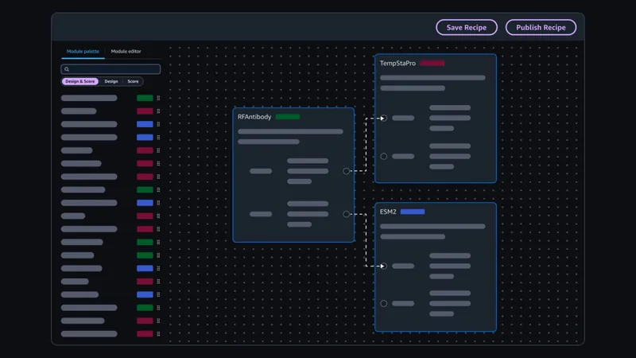
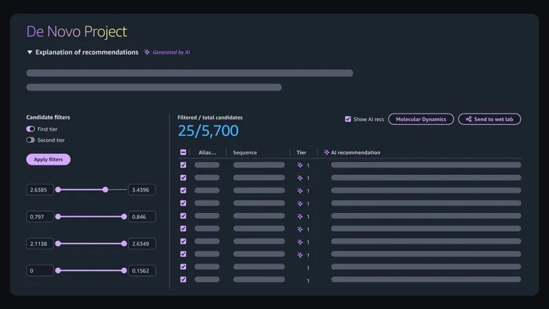
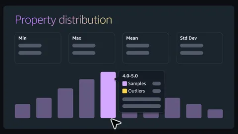

Amazon Bio Discovery
Scientists design antibodies with AI agents in one application, and partner labs test the designs.




- Role
- Head of Product, AWS Applied AI, Life Sciences, from the start to the launch
- Scale
- Directed a cross-functional organization of 100+ engineers, scientists and product managers
- Launched
- 14 April 2026, at the AWS Life Sciences Symposium in New York
I led product for Amazon Bio Discovery, an agentic AI application for antibody design, from its start to its launch on 14 April 2026, with an organization of 100+ engineers, scientists and product managers. In the launch campaign, 46 of 116 designs tested were confirmed binders.
What I decided
Set the bar at the scientists’ own work
Drug discovery scientists work at the frontier of their field, so my bar was a product that fit the way they already worked. Access to models was only the first step. Fitting them into daily work meant working closely with those scientists.
Checked the interface and its usefulness
From my earlier products I brought frequent checkpoints on two things beyond the models: the interface, and how useful scientists found it. Our team ran a design campaign with Memorial Sloan Kettering Cancer Center (MSK), and the scientists’ feedback shaped the product.
Launched once the product met the bar
We checked each version against that bar and launched when the product met it. AWS had said in December 2025 that an antibody product was in beta. It opened on 14 April 2026 with AI agents and more than 40 biological AI models.
How it worked
Months from a target to a candidate
A paper AWS published at launch put conventional antibody discovery at 6 to 12 months, from a target protein to the antibody chosen for development. Scientists had little control over where on the target an antibody would bind. Bench scientists knew the biology and waited for computational biologists to run the models.
The agent proposes where to bind
A scientist uploads a target protein and presses “Recommend hotspots,” and an AI agent proposes where on the protein to bind. The agent runs seven bioinformatics tools, and a language model turns their results into ranked regions, each with written evidence. Tested on 76 known antibody-target pairs, one of its top five regions overlapped the true binding site about 80% of the time.

Three models, 288,000 designs
In the campaign with MSK, three design models, each working a different way, produced 96,000 nanobody designs apiece: 288,000 in all. A nanobody is a small, single-domain antibody. The run used 2,000 graphics processing units in two AWS data-center regions.

What a design must pass to reach a lab
A second agent ranked the designs on five scores, keeping those that no other design outdid on one score without falling behind on another, until 100,000 remained. Scientists also compare the models that predict whether an antibody can be made into a medicine, against lab measurements of six traits for 50 seed antibodies.

Only a lab test confirms a binder
Twist Bioscience, a launch lab partner, made the DNA for 100,000 designs, and a first screen in yeast sent 116 on to the binding test. That test was surface plasmon resonance, a laboratory measure of binding, and 46 of the 116 were confirmed binders.
Each lab result returns to the experiment that produced it and is checked before any model retrains on it. At launch, MSK said the campaign went from target to a lab order in weeks.

The launch campaign, design by design
Launch

“Patients come here with a clock. We need results sooner.”Nai-Kong Cheung of Memorial Sloan Kettering, in Amazon’s launch announcement
Amazon Bio Discovery opened on 14 April 2026 at the AWS Life Sciences Symposium in New York. Scientists could design with its agents and more than 40 models, and send designs to partner labs with cost and turnaround shown before ordering. Amazon named Bayer, the Broad Institute, Fred Hutch Cancer Center and Voyager Therapeutics as early adopters.
What came next
On 10 August 2026, Novo Nordisk made AWS its preferred cloud provider and strategic AI partner, and said it would use Bio Discovery to identify drug targets and design therapies faster. In October 2026, NVIDIA and the University of Washington’s Institute for Protein Design released an open protein design model, “available today through partners including Amazon Bio Discovery.”